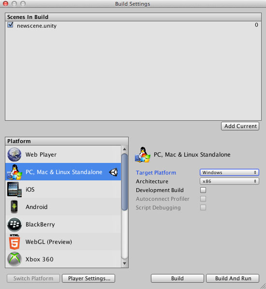
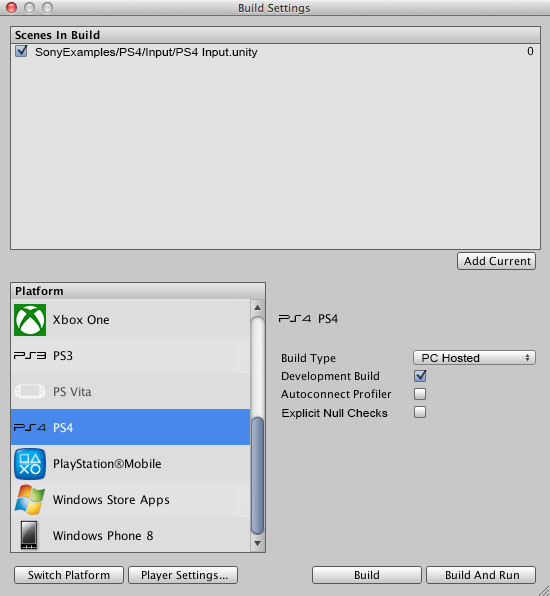

PS4 Building and Running
The following is a step by step guide to build and run a new project on the PS4.
Before you start
- Make sure your copy of Windows is up to date, including Service Packs
- You must be a registered PS4 developer
- You should read PS4 Getting Started and PS4 Setup
Test a PC Standalone Build
To learn the basic steps necessary in creating a build we will first do a PC Standalone Build.
- Create a new Unity project
- Unity will create a new scene automatically
- Save the new scene (File/Save Scene)
- Open the Build Settings window (File/Build Settings)
- Add your new scene to the 'Scenes to Build' pane either by clicking the 'Add Current' button or by dragging the scene from the Project View in to the 'Scenes to Build' window
- Make sure 'PC, Mac & Linux Standalone' is selected in the Platform window
- In the Target Platform option, select 'Windows'
- Click the 'Build & Run' button
- Choose a destination folder and give your game a filename. It is good practice to put your build in the project directory
- The standalone executable should be created and executed. You will be prompted with a configuration dialog, click OK and the player will run.
- Now you've gone through the basic build and run process you can now try a PS4 build

Build the PS4 Player
Continuing on from our previous exercise, Building and Running your new project on the PS4 is now very easy.
- Firstly, ensure that your PS4 development kit is connected to your PC and powered on
- Run Neighborhood for PlayStation(R)4 and ensure that the Connection Status is set to 'Connected' and that the device is currently the default device (displayed in bold)
- In Unity, choose 'File/Build Settings...', then select 'PS4' in the Platform window and click the 'Switch Platform' button
- Select PC Hosted as the 'Build Type'
- Click on the 'Build & Run' button
- Choose a destination folder (create a new folder). It is good practice to put your build in the project directory. If you are reusing the directory created in the last exercise you should delete the previously created .exe file. This is only required on this occasion because we've changed Platform
- Unity should now build your project, automatically connect to your device and run the game

Warnings and Errors
Building a Unity project can result in warnings and errors. Unity displays these in the Editor Console window (menu: Window > General > Console). Select a message to see details about it at the bottom of the window. You can disable errors and warnings separately; to do this, click the relevant icon at the top-right of the window. See documentation on the Console window for more information.
You can find additional information about a build in the Unity editor log. Sometimes this log can contain critical details about why a build is failing, and can be useful when requesting support. See documentation on Log Files for more information.